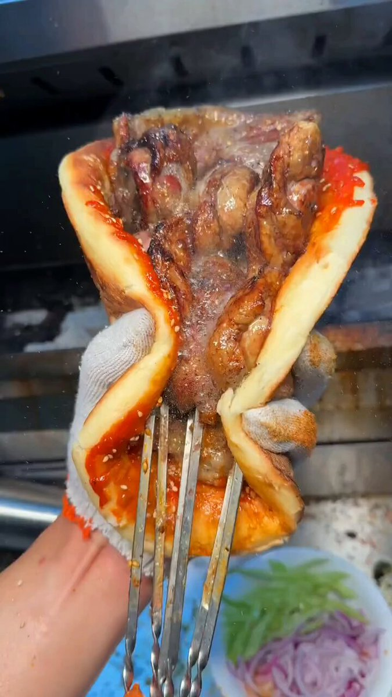
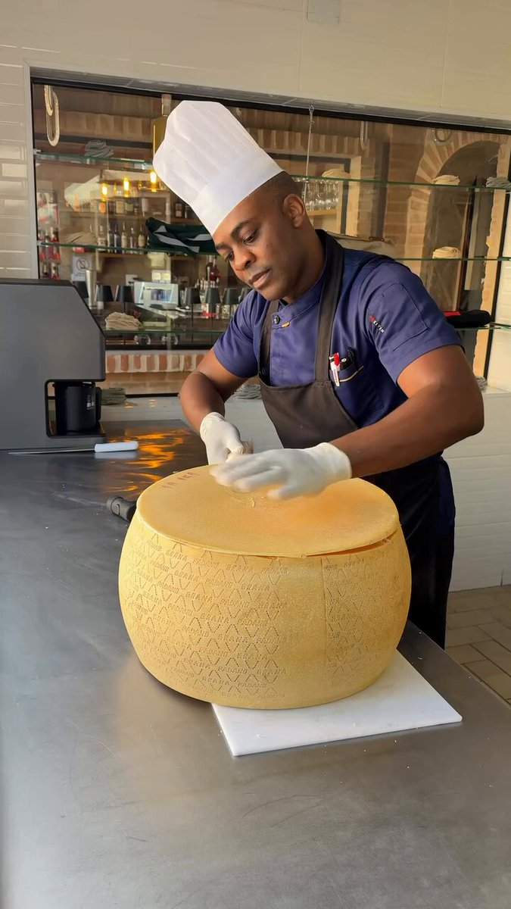
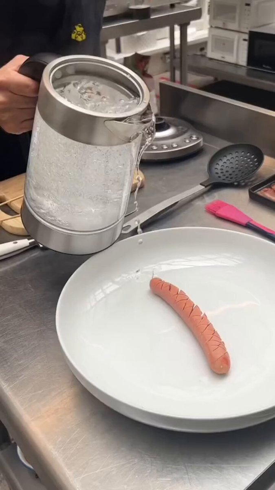
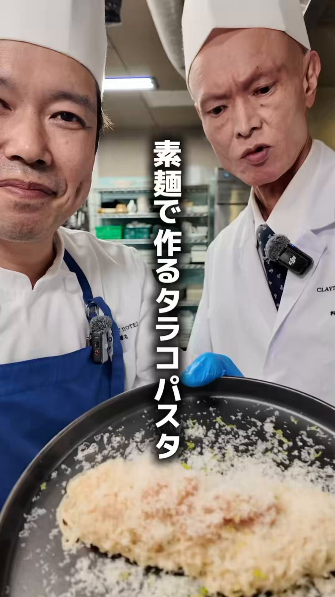
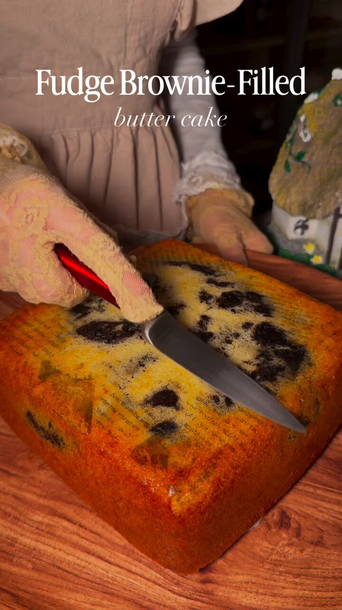
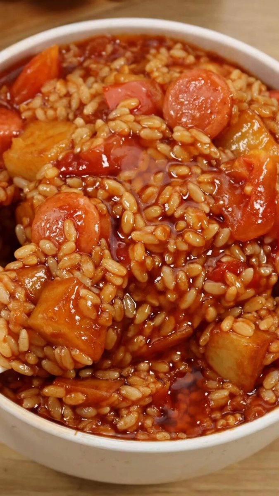
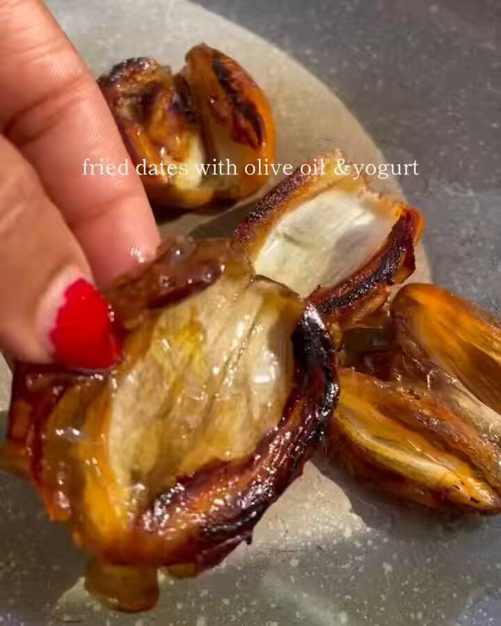

毎朝、前日にjoy-relief-stationへ新規登録された動画・投稿を自動で見回る仕組み（707番の自動化）。このページは毎朝の実行結果で上書きされる固定の場所。過去分は日付つきページ（例：756-daily-ingest-2026-09-10.html）に個別で残す。今日表示しているのは直近の実行結果＝2026-09-10分13件の見回り。文字（題名・コピー）は自然な文章なのに絵の中身が別物という『ヤギの件』と同じ型を3件、707番で修正済み報告があったのに実際は本番未反映だった串焼き肉1件を追加で発見し、計4件を本番修正した。
直した：串焼き肉（前：食事の時間に反応して集まる様子 → 後：パンからあふれ出す特大の串焼き肉）
直した：チーズ（前：こだわり素材で作る本格的なパスタ料理 → 後：大きなチーズの塊を丁寧に削り出す職人の手さばき）
直した：ソーセージ（前：規格外のハンバーガーが登場 → 後：大きなケトルの熱湯で一本のソーセージだけを茹でる）
直した：フクロモモンガ（ヤギ型・前：Naturevibesが投稿した美しい自然や日常の風景 → 後：ケージ越しにこちらを見つめるフクロモモンガ）
そのままでよかった：タラコパスタ
そのままでよかった：バターケーキ
そのままでよかった：ミートボールパスタ
そのままでよかった：リコーダー演奏
そのままでよかった：子鹿
そのままでよかった：AIおばあちゃんゲーム
そのままでよかった：米料理
そのままでよかった：デーツ焼き
判断がつかなかった：踊る女の子（静止画だけでは動きが確認できず）